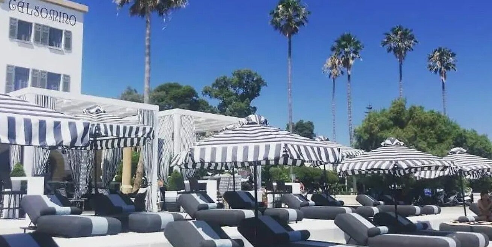
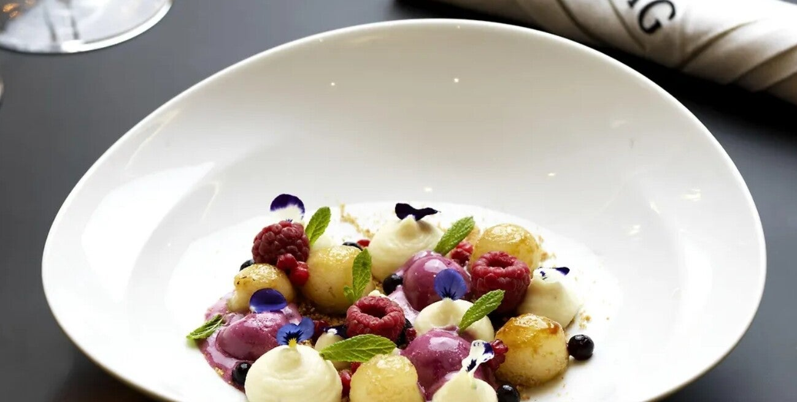

Albergo Gelsomino
Het eerste luxe hotel van Kos-stad – Italiaanse architectuur uit de jaren twintig, opnieuw in glorie hersteld.
Het eerste hotel van Kos
Albergo Gelsomino is een historisch gebouw in Kos-stad, opgericht tussen 1927 en 1928, toen het eiland onder Italiaanse controle stond.
Het is ontworpen door de Italiaanse architect Rodolfo Petracco en was het eerste luxe hotel op het eiland – vooral voor Italiaanse bezoekers en functionarissen. De stijl is typisch Italiaanse architectuur uit die tijd.

Oorlog en junta
Tijdens de Tweede Wereldoorlog werd het gebouw gebruikt door de Duitse bezetters. Later, toen Griekenland het eiland kreeg, diende het als onderkomen voor Griekse legerofficieren tijdens de junta (jaren ’60 en ’70).
Daarna bleef het belangrijk voor de gemeente Kos en werd het gebruikt voor verschillende overheidsdiensten.

De glorie hersteld
Tussen 2015 en 2018 is het gebouw volledig gerestaureerd en opnieuw geopend als hotel. Vandaag is Albergo Gelsomino een klein hotel met acht kamers – het historische karakter is behouden.
Bezoeken
Het pand ligt in Kos-stad. De buitenkant kun je altijd bekijken vanaf de straat. Het is een werkend hotel: de lobby en kamers zijn voor gasten.